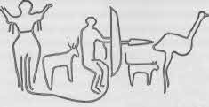
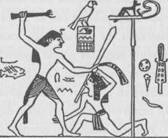

Kahramanın doğum yeri ya da insanlar arasında yetişkinlik işlerini gerçekleştirmek üzere geri döndüğü uzak sürgün ülkesi, dünyanın orta yeri ya da göbek deliğidir. Bir sualtı kaynağından kabarcıkların çıkması gibi, evrenin biçimleri bu kaynaktan halka halka yayılır.
“Geniş, kıpırtısız derinliklerin üstünde, göğün dokuz feleği ve yedi katı altında, orta yerde, Dünyanın Göbek Deliği, dünyanın en sakin yeri, ayın solmadığı, güneşin de batmadığı, ebedi yazın hüküm sürdüğü ve ağaçkakanın durmaksızın cıvıldadığı yerde, orada Ak Genç bilincine kavuştu.” Sibiryalı Yakutların bir kahraman miti böyle başlamaktadır. Ak Genç nerede olduğunu ve yaşadığı yerin nasıl bir yer olduğunu öğrenmek üzere ilerledi. Doğusunda geniş, nadasa bırakılmış bir tarla uzanıyordu, ortasında büyük bir tepe vardı ve tepenin ortasında da devasa bir ağaç. Ağacın özü saydamdı ve hoş kokuluydu, kabuğu hiç kurumuyor, çatlamıyordu, özsuyu gümüşsü parıldıyordu, gür yapraklar hiç solmuyordu ve çiçek salkımları ters çevrilmiş bardakları andırıyordu. Ağacın tepesi yedi kat göğü aşıyor ve Yüce Tanrı, Yryn-ai-tojon için bir dilek ağacı olarak görünüyordu; kökleriyse, oranın mitik yaratıklarının barınaklarına kiriş oluşturarak yeraltı uçurumlarına iniyordu. Ağaç yaprakları aracılığıyla göğün yaratıklarıyla sohbete dalmıştı.
Ak Genç güneye döndüğünde, yeşil otluk bir ovanın ortasında tek bir rüzgârın esmediği sakin Süt Gölü’nü gördü; ve gölün kıyısında ekşimik bataklıkları vardı. Kuzeyinde, gece gündüz hışırdayan ağaçlarıyla kasvetli bir orman duruyor ve içinde her türden canlı geziniyordu. Ardında uzun dağlar yükseliyordu ve beyaz tavşan kürkünden şapkalar giymiş gibiydiler; göğe yaslanıyorlar ve bu orta yeri kuzey rüzgârından koruyorlardı. Batıya doğru bir çalılık uzanıyordu ve onun da ötesinde uzun bir köknar ormanı duruyordu; ormanın ardında bir sürü pek sivri uçlu olmayan zirve görülüyordu.

Çizim 17. Paleolitik Petroglif (Cezayir).
Yani, Ak Genç'in gün ışığını gördüğü gün dünyanın hali buydu. Yalnızlıktan yorulmuş olarak, devasa yaşam ağacına doğru ilerledi. “Kutsal Yüce Efendi, Ağacımın ve Barınağımın Annesi,” diye dua etti; “yaşayan her şey çiftler halinde varoluyor ve ardıllarını getiriyor, ama ben yalnızım. Gezmek ve kendi türümden bir eş aramak istiyorum; kendi türüme karşı gücümü sınamak istiyorum; insanlarla karşılaşmak- insanların hallerine göre yaşamak istiyorum. Benden bağışını esirgeme; olanca alçakgönüllülüğümle dua ediyorum. Başımı eğiyor ve diz çöküyorum.”
O zaman ağacın yaprakları mırıldanmaya başladı ve hoş, süt beyazı bir yağmur döküldü onlardan Ak Genç'in üstüne. Sıcak bir rüzgâr hissedildi. Ağaç inlemeye başladı ve köklerinden, beline kadar bir kadın figürü belirdi: orta yaşta, ciddi bakışlı, saçları uçuşan ve göğüsleri çıplak bir kadın. Tanrıça gence muhteşem göğüslerinden süt sundu ve onu içer içmez genç gücünün yüz kat arttığını hissetti. Aynı zamanda tanrıça gence her tür mutluluk diledi ve onu ne suyun, ne de ateş, demir ya da herhangi bir şeyin zarar vermemesi için kutsadı.{435}
Kahraman göbek bağı noktasından kaderini gerçekleştirmek üzere ayrılır. Yetişkinlik işleri dünyaya yaratıcı güç dağıtır.
Şarkı söyledi yaşlı Vâinâmöinen;
göller kaynaştı, yer sarsıldı,
ve bakır dağlar titredi,
ve güçlü kayalar çatladı.
Ve dağlar birbirinden ayrıldı;
kıyıdaki taşlar parçalandı.{436}
Ozan-kahramanın dizeleri gücün sözlerinin büyüsüyle sesleniyor; benzer biçimde, savaşçı-kahramanın kılıcının ucu yaratıcı Kaynağın enerjisiyle parıldar: önünde Yıpranmış Olanın kabukları dökülür.
Çünkü mitolojik kahraman olacak şeylerin değil, olan şeylerin yandaşıdır: katledeceği ejder tam da status quo canavarıdır: Yerinde Duran, geçmişin bekçisi. Belirsizlikten kahraman çıkar, fakat düşman gücün koltuğunda büyük ve hilebazdır; düşmandır, ejderdir, tirandır, çünkü konumunun yetkisini kendi çıkarına çevirir. Geçmişi beklediği için değil, beklediği için Yerinde Duran'dır.
Tiran gururludur ve içinde cehennemini taşır. Gururludur, çünkü gücünü kendine ait sayar; böylece soytarı rolündedir, gölgeyi maddeyle karıştırır; aldatılmak kaderidir. Günün şekillerinin kaynağı olan karanlıktan yeniden beliren mitolojik kahraman, tiranın cehenneminin gizine dair bir bilgi getirir. Bir düğmeye basmak kadar basit bir hareketle etkileyici düzeneği bozar. Kahramanın görevi anın kristalleşmelerini sürekli parçalamaktır. Çevrim süregider: mitoloji büyüme noktasına odaklanır. Yaşayan tanrı için direngen cansızlık değil, dönüşüm, akışkanlık karakteristiktir. Anın büyük figürü yalnızca kırılmak, dilimlere ayrılmak ve çevreye dağıtılmak için varolur. Kısaca: dev-tiran muazzam gerçeğin, kahramansa yaratıcı yaşamın savunucusudur.
Kahramanın insan biçimindeki dünya süreci ancak köyler ve şehirler toprak üzerine yayılınca başlar. Başlangıçtaki zamanlardan geri kalan birçok canavar hâlâ çevre bölgelerde dolanır ve kötülük ya da umutsuzluk yüzünden kendilerini insan topluluğuna karşı kılarlar. Yok edilmeleri gerekir. Dahası, komşularının eşyalarını kendilerine devşiren insan soyundan tiranlar ortaya çıkar ve yaygın sefaletin sebebidirler. Bastırılmaları gerekir. Kahramanın temel görevleri alanın temizlenmesine ilişkin olanlardır.{437}
Kut-o-yis, ya da “Kan Pıhtısı Oğlan” kaseden alınıp da bir gün içinde erkek olunca, manevi ailesinin katil damadını öldürdü, sonra kırda bekleyen devlere yöneldi. Anne olmak üzere olan bir dişi dışında, tüm bir vahşi ayılar kabilesini yok etti. “Dişi ayı yaşamı için o kadar yalvardı ki, bağışladı onu. Bunu yapmasaydı, yeryüzünde tek bir ayı kalmayacaktı.” Sonra bir yılanlar kabilesini kesip biçti, ama yine “anne olmak üzere olan biri” dışında. Sonra tehlikeli olduğu söylenen bir yolda rahatça yürüdü. “Giderken büyük bir hortuma yakalandı ve sonunda büyük bir balığın ağzına kadar sürüklendi. Bu bir emici balıktı ve rüzgâr onun emişiydi. Balığın karnına girince bir sürü insanla karşılaştı. Çoğu ölüydü, ama bazısı hâlâ yaşıyordu. İnsanlara dedi ki, ‘Ah, bir yerlerde bir kalp olmalı. Dans edeceğiz.’ Yüzünü beyaza boyadı, gözlerine ve ağzına kara daireler çizdi ve başına beyaz bir kaya bıçağını ucu yukarıda olacak şekilde bağladı. Zırıltılar da getirildi. Sonra insanlar dans etmeye başladı. Bir süre Kan Pıhtısı elleriyle kanat hareketleri yapıp şarkı söyleyerek oturdu. Sonra doğrulup dans etti, başındaki bıçak kalbe vuruncaya dek aşağı yukarı sıçradı. Kalbi söküp çıkardı. Sonra balığın kaburgalarının arasını kesti ve insanların hepsini dışarı çıkardı.
“Kan Pıhtısı yolculuğa devam etmesi gerektiğini söyledi. Başlamadan önce insanlar onu, bir süre sonra herkesi kendisiyle güreşmeye çağıran bir kadınla karşılaşacağını, onunla konuşmaması gerektiğini söyleyerek uyardılar. Söylediklerine kulak asmadı ve bir süre gittikten sonra, onu çağıran bir kadın gördü. ‘Hayır,’ dedi Kan Pıhtısı. ‘Acelem var.’ Yine de, kadın dördüncü kez çağırınca şöyle dedi, ‘Evet, ama bir süre beklemelisin, çünkü yorgunum. Dinlenince gelip seninle güreşeceğim.’ Dinlenirken, yerde samanlarla gizlenmiş bir sürü büyük bıçak olduğunu gördü. O zaman kadının insanları güreşirken oraya devirerek öldürdüğünü anladı. Dinlenince, devam etti. Kadın onun bıçakları gördüğü yerde durmasını istedi; ama o şöyle dedi, ‘Yok, daha hazır değilim. Başlamadan önce biraz oynaşalım.’ Kadınla oynaşmaya başladı, ama hemen onu yakalayıp bıçaklara attı ve ikiye parçaladı.
“Kan Pıhtısı yola devam etti ve bir süre sonra bir yaşlı kadınlar topluluğuna rastgeldi. Yaşlı kadınlar ona az gittikten sonra salıncaklı bir kadınla karşılaşacağını, ne olursa olsun onunla sallanmamasını söylediler. Bir süre sonra azgın bir nehrin kıyısında bir salıncak gördü. Üzerinde sallanan bir kadın vardı. Onu bir süre seyretti ve kadının sallayıp suya düşürerek insanları öldürdüğünü gördü. Bunu fark edince kadına gidip ‘Senin salıncağın var; sallan da bir göreyim,’ dedi. ‘Hayır,’ dedi kadın, ‘ben seni sallanırken görmek istiyorum.’ ‘Tamam,’ dedi Kan pıhtısı, ‘ama önce sen sallanmalısın.’ ‘Tamam,’ dedi kadın, ‘şimdi ben sallanacağım. Bak bana. Sonra ben de seni seyredeceğim.’ Böylece kadın nehrin üzerinde sallandı. O bunu yaparken, Pıhtı olanı biteni anladı. O zaman kadına dedi ki, ‘ben hazırlanırken sen bir kere daha sallan’; fakat kadın yine sallanırken sarmaşığı kesti ve onu suya düşürdü. Bu Kesik Kıyı Deresi’nde oldu.”{438}
Bu türden işlerle bizim Dev Öldüren Jack masalından ve Herakles ve Theseus gibi bu türden kahramanların çabalarına dair klasik öykülerden tanışığız. Ayrıca, Azize Martha’ya ilişkin aşağıdaki büyüleyici Fransız öyküsünde olduğu gibi, Hıristiyan azizlerinin efsanelerinde de bulunmaktadır.
“O zamanlar Rhone’un kıyılarında, Avignon ve Arles arasındaki bir ormanda, yarı hayvan yarı insan, öküzden büyük, attan uzun, dişleri boynuzlar kadar keskin ve vücudunun iki yanında büyük kanatlar taşıyan bir ejder vardı; bu canavar bütün gezginleri katletti ve bütün kayıkları batırdı. Galatya’dan deniz yoluyla gelmişti. Ebeveynleri, Leviathan -denizde yaşayan bir yılan biçiminde bir canavar- ve Onager’di - dokunduğu her şeyi ateşle yakan, Galatya’da yetişmiş korkunç bir canavar.

Çizim 18. Kral Ten (Mısır, İlk Hanedan, ca. MÖ 3200)
“İşte Azize Martha, insanların ısrarıyla ejdere karşı gitti. Onu ormanda bir adamı parçalarken bulunca, üzerine kutsal su serpti ve haç çıkardı. Canavar o anda kayboldu ve azizenin kuşağını boynuna geçirip komşu bir köye götürdüğü bir koyuna dönüşüverdi. Orada halk onu taş ve sopalarla katletti.
“Ve ejder insanlar tarafından Tarasque olarak bilindiğinden, şehir onun anısına Tarascon adını aldı. O zamana dek nehrin kıyısını kaplayan karanlık ormanlar yüzünden Kara Göl anlamına gelen Nerluc olarak çagırılıyordu.”{439}
Antik çağın savaşçı-kralları işlerini canavar katletme olarak görüyordu. Parlak kahramanın ejdere saldırdığı bu formül, bütün haçlı seferleri için büyük bir kendini aklama aracı olmuştur. Kendi halkının uygarlıklarını devraldığı Sümerlilerin kadim şehirlerini yok eden Agadeli Sargon’un aşağıdaki çivi yazısındaki gösterişli kayıtsızlıkla sayısız anıtsal tablet yazılmıştır.
“Agade’nin kralı, tanrıça Iştar’m vekili, Kiş’in kralı, tanrı Anu’nun paşişu’su,{440} Yerin Kralı, tanrı Enlil’in büyük işakku’su{441} Sargon: Uruk şehrine saldırdı ve duvarını yok etti. Uruk halkıyla çarpıştı ve esir edip Enlil kapısından geçirdi. Agade kralı Sargon, Urlularla savaştı ve yok etti onları; şehrini sardı ve duvarını yok etti. E-Ninmar’ı sardı ve duvarını yok etti ve tüm bölgesini, Lagaş’tan denize dek sardı. Silahlarını denizde yıkadı. ...”